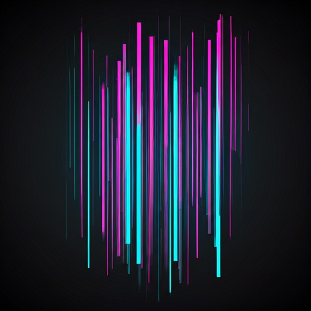
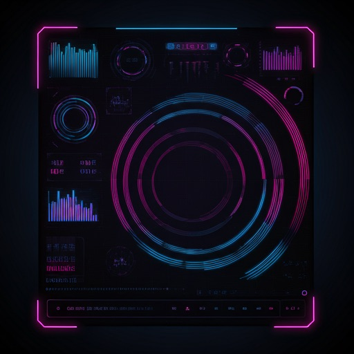
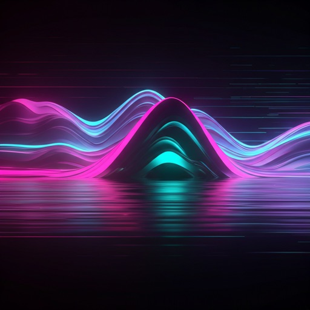
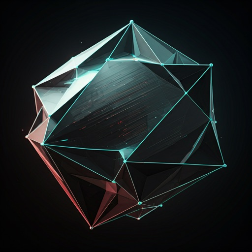

DECRYPT THE CHROMATIC VIRTUAL_VOID
Experience the beauty of data corruption. Our proprietary neural compression algorithms synthesize intentional artifacts, creating an aesthetic of high-frequency noise and RGB separation.

ANALYSIS_GRID
Our algorithm detects edge cases and intentionally magnifies them. By shifting the phase of each RGB subpixel, we create a sense of digital vertigo.
ARTIFACT_GALLERY
A curation of high-fidelity failures. Every image is a result of a specific system overflow event.




INITIATE SYSTEM BREACH
Join the collective. Gain access to high-density data visualizations and the raw output of our chromatic synthesizers.